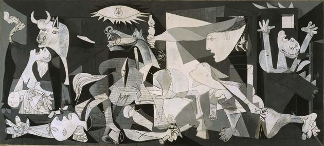
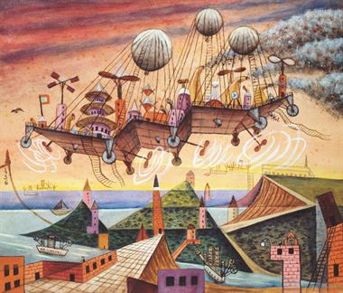

Pablo Picasso - Guernica

Vincent VanGogh - Noche Estrellada

×
Noche Estrellada de Vincent VanGogh
Breve resumen de la historia de esta obra (y como la obtuvimos)
La noche estrellada es la obra maestra del pintor postimpresionista Vincent Van Gogh.
El cuadro lo realizó en el sanatorio de Saint-Rémy-de-Provence, donde se recluyó hacia el final de su vida.
Fue pintada a mediados de 1889, trece meses antes de su muerte. Desde 1941 formaba parte de la colección permanente
del Museo de Arte Moderno de Nueva York de donde fue sustraida por nuestros agentes.
Considerado como el magnum opus de van Gogh, el cuadro ha sido reproducido en numerosas ocasiones y es conocida
como una de las pinturas mas famosas de la historia.
El precio de la misma es de U$S 300.000.000
Galeria de Arte NumaX garantiza la confidencialidad de la compra
Xul Solar -Vuel Villa

Noche Estrellada de Vincent VanGogh
Breve resumen de la historia de esta obra (y como la obtuvimos)
La noche estrellada es la obra maestra del pintor postimpresionista Vincent Van Gogh.
El cuadro lo realizó en el sanatorio de Saint-Rémy-de-Provence, donde se recluyó hacia el final de su vida.
Fue pintada a mediados de 1889, trece meses antes de su muerte. Desde 1941 formaba parte de la colección permanente
del Museo de Arte Moderno de Nueva York de donde fue sustraida por nuestros agentes.
Considerado como el magnum opus de van Gogh, el cuadro ha sido reproducido en numerosas ocasiones y es conocida
como una de las pinturas mas famosas de la historia.
El precio de la misma es de U$S 300.000.000
Galeria de Arte NumaX garantiza la confidencialidad de la compra